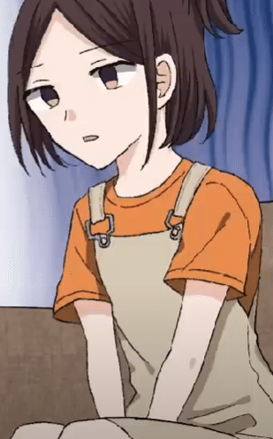
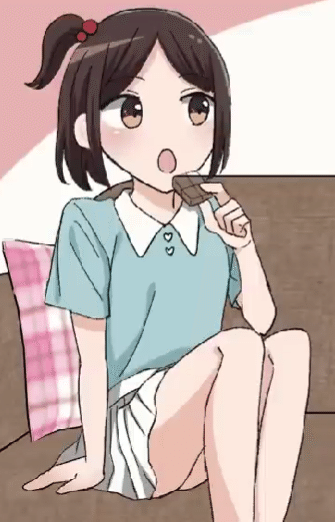
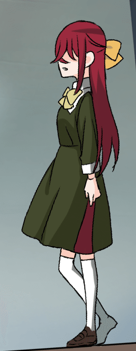
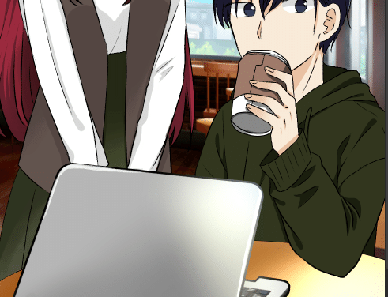
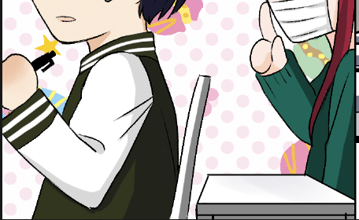
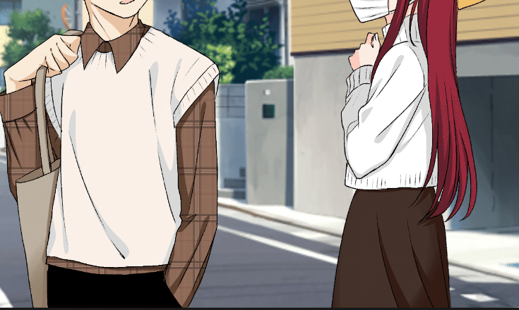
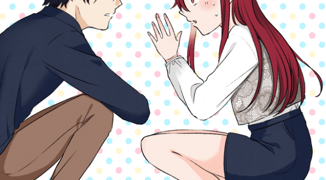

坂街 透のブログ
サルベド漫画の作画を手がける坂街 透による制作ブログ。キャラクターデザインの裏側、サムネイル一枚ごとに込めた工夫、衣装デザインのこだわりなど、ふだんは見えない「絵が生まれるまで」の話を、本人の言葉で綴っています。
記事一覧
-
作画担当作 裏話
ヒロイン・羽田ミソラと主人公・ツバサのキャラデザはどう生まれたか。髪色の決め方、サムネイルに込めた表情の工夫、そして思わず生まれた“作画ミス”のかわいい裏話まで。 -
作画のお話 キャラの服装の決め方
指定の少ない衣装デザインを、坂街 透はどう決めているのか。デビュー作から最新作まで、ヒロインたちの服に込めた試行錯誤と、「そのキャラが選びそうな一着」を探すこだわりを語る。
作画担当作 裏話

こんにちは。YouTube恋愛漫画動画チャンネル、サルベド漫画様にて、作画のお仕事させていただいております。坂街 透と申します
トップ画の作品について少しお話したいなと思います
良ければぜひ動画もご覧ください
キャラデザについて
私の場合、キャラデザは、デザインというほどあまりこねくり回して考えるとかはなくて。原作シナリオを読んだときに浮かび上がってきた人物像をそのまま絵にする、みたいな形でやっています。
性格とか、喋り方とか、考え方とか、オーラとかから……………。
一旦思いついたまま描いて、後から「過去のキャラと被ってないか」「もっと似合った髪型や色がないか」「もっとみんなに好きになってもらうにはどうしたらいいか」を考えます。けど、結構割とそのままなことが多いです。今のところは。
主人公もそんな感じなのですが、髪型にめちゃくちゃ悩みます。アイデアの引き出しがそんなにないのと、リアルでできそうな範囲の髪型ばかりさせてしまうので、過去作の子たちと被りそうになります。イケイケすぎないキャラデザを心がけているのもあり、結構悩みます。
今回ヒロインの名前が「羽田 ミソラ」さんなのと、クールキャラということで、青系の色をメインカラーにするのは決定していました。
しかし過去作の美人お姉さんキャラで三人ほど青髪のキャラがいたので、どんなブルーを使うか悩みました。
結果、銀髪ベースで若干スカイブルー系をグラデーションで混ぜつつ、ハイライトにも生かす形になりました。
主人公は、原作から受けた柔和なイメージと人懐っこさからこのような感じになりました。ミソラが氷なら、ツバサ君は太陽のように。でも熱すぎずまぶしすぎない、春のひだまりみたいな感じがいいなと思いました。あと犬っぽさもある感じの。過去作のキャラとの差別化として、耳横をハネさせました。あと、「ツバサ」っぽい要素を入れたかった。

メモに日替わりでお団子にしようかなと書いてますが、作中で描くことは結局なかったですね。一回描いてみたんですが、可愛すぎて、隙のない美人とはちょっと違ったんです。主人公と付き合い始めた後でしてるかもしれませんね。また、なんかピアスかイヤリングを着けているイメージがあったのでそれもメモしています。髪型は変わらなかったですが、ピアスは日替わりです。
ところでキャラデザの二人、かわいいな………………なんだろう、かわいいね。
他のイラストレーターさんはどうなのかわかりませんが、私はキャラデザは上半身、というか肩までしか描きません。
果たしてこれでいいのかとたまに思いますが、今のところオッケーいただけてるので、良いんだと思います。
サムネの話
サムネってスマホからだとすごく小さいし、サムネだけじっくり見てもらうこともあまりできないので、せっかくなのでここで語らせてください

リップをつけているミソラさん。本編ではつけてないので、せっかくならとつけてあげましたが、コマが小さくて結局あんまり見えませんでした。こっちはまだちょっと見える↓

じっとり半目がお気に入り。後鼻のハイライトと赤み

本編の絵をサムネ用に加筆修正し、ニコニコの笑顔になったツバサくん。

はじめ手を掴んだのに次のコマで服の袖になっている作画ミスに気付いたけど完成しちゃったしなんかもういいや～～～～になったところ。とっさに手を掴んだものの恥ずかしくなって袖を引っ張りなおしたに違いない。え、なにそれ可愛いな？
ひとまずこの辺で。
お読みいただきありがとうございました
作画のお話 キャラの服装の決め方
こんにちは。YouTube恋愛漫画動画チャンネル、サルベド漫画様にて、作画のお仕事させていただいております。坂街 透と申します。
うっかり朝の５時に起きてしまい、眠れないのでこれを書いています
今回はキャラの服装の決め方についてお話ししようかなと思います
まず、基本的に服装の指定が入ることはあまりないので、かなり自由に描かせていただいております。大分ありがたいですが、それと同時にファッションセンスのない自分は毎回かなり苦しんでおります………………。なのでオフィスラブや学生のお話は結構助かったりしています。
この仕事を始めたころは、コストカットのためにずっと同じ服装（もしくはインナーの色変えただけとか）でもいいんじゃないかと思ってた時期もありました。でもそこはやはりサービス精神というか、いろんな姿のヒロインを、何より私が見たいので頑張って描いております。
ただおしゃれ初心者の私には服で精いっぱいで、髪型アレンジまで手が回らないのがネック。まあ、それは追々できるようになっていければなと思います。
記念すべき一本目の動画。当時は正直まだあまり服装へのこだわりがなかったです。
コートの色が茶色なのは、たぶんなんかこう、きれいな女性が着てるイメージがあったからです。このヒロインは絶対タイトスカートに黒タイツだ！と思ってスタイリングしたはいいものの、全身映るシーンがほぼないまま終わりました。無念。
双子の姉妹も出てくるのですがメインヒロインより社交的なタイプだったので、ポップなカーディガンを着せました。いまならもっと可愛い柄のカーディガンを着せてあげたい。
マフラーが赤いのは、当時の私は本当にファッションに無知で、マフラーって基本赤チェックだよなって思って、そのまま…………。そのキャラが選びそうなもの、という視点が当時はまだなかったです。今なら多分違うものにする。もっとワインレッドみたいなシックな赤とか、白とか………………。
２本目の動画。妹のハトちゃんの私服にめちゃくちゃ悩んだ思い出があります。私服と言うか、部屋着？私家にいるときはパジャマでしか過ごさないので、年頃の女の子が、家で何着るかわからなくて………………。なので確か、インスタで色々調べた気がします。似合うものを必死に探してました。
お気に入りはこの二枚


メインヒロインと主人公は基本制服でのシーンでしたね
主人公はもう、原作読んだときに「絶対ブレザーじゃなくてカーディガン着てる…………色は紺」と直感的にイメージが浮かんだのでこうなりました。実際紺色にすると色が強すぎたので抑えた色味になりました。
ヒロインは原作を読んだ際、胸はちょい開けててリボン等はつけてないイメージだったので、こうなりました。それだけだと物足りないので、袖は捲って活発さを出してみた感じです。白ニーソは趣味です。今なら多分足首くらいの長さで描いちゃうと思う。
三本目。この作品から服装にこだわるようになりました。また、制服も渾身のオリジナルデザイン。ヒロイン、カエデの真紅の髪に似合いつつ、いいとこの私立っぽさのあるデザインを意識しました。

横にスリットが入っています。普段無難な服しかデザインしないので、思い切ってみました。
固定のデザインを作ることで、後々「このキャラとあのキャラ同じ学校通ってるんだ！」というクロスオーバー的な、そういうことができたらなと思い作りました。
中盤～後半は大学生になった二人の私服オンパレードですね。これもインスタで色々調べまくった記憶があります。カエデはお嬢様育ちなので、きれい系のなるべく仕立てのいい服を着せたいなと考えていました。絶対１着の値段高いと思う
一番難しかったのが、インターホンを押されて出て来たカエデのシーン。サングラスとマスクと帽子を着けているけど、完全変人にならないように可愛いさも頑張って残したくてめちゃくちゃ悩んだ思い出があります。色の組み合わせどうしよう、とか（笑）
無意識だったか、狙ってだったかはもう覚えてないんですが、二人の服の色が結構リンクしてて面白かったです。一緒に並んで歩いた時にちぐはぐにならないように考えてたような気もする。
二年前のことなのであんまり覚えてないですが………………。




気づいたら外も明るい。一旦このあたりで。
お読みいただきありがとうございました。
この記事へのコメント
著者について
坂街 透 — サルベド漫画 作画担当
この記事へのコメント